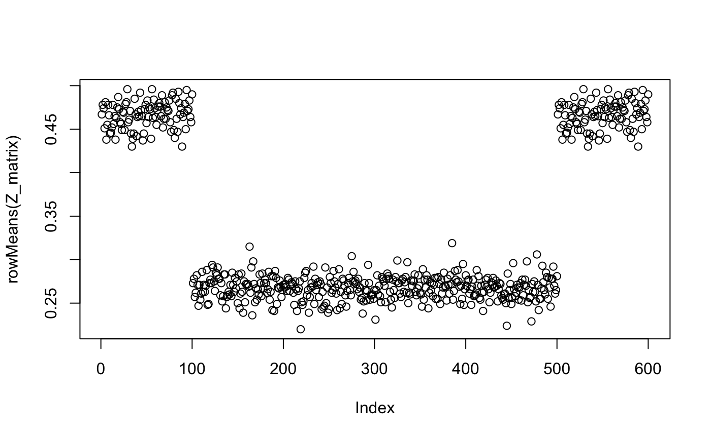

vignettes/randomizr_vignette.Rmd
randomizr_vignette.Rmdrandomizr is a small package for r that simplifies the design and analysis of randomized experiments. In particular, it makes the random assignment procedure transparent, flexible, and most importantly reproduceable. By the time that many experiments are written up and made public, the process by which some units recieved treatments is lost or imprecisely described. The randomizr package makes it easy for even the most forgetful of researchers to generate error-free, reproduceable random assignments.
A hazy understanding of the random assignment procedure leads to two main problems at the analysis stage. First, units may have different probabilities of assignment to treatment. Analyzing the data as though they have the same probabilities of assignment leads to biased estimates of the treatment effect. Second, units are sometimes assigned to treatment as a cluster. For example, all the students in a single classroom may be assigned to the same intervention together. If the analysis ignores the clustering in the assignments, estimates of average causal effects and the uncertainty attending to them may be incorrect.
Throughout this vignette, we’ll pretend we’re conducting an experiment among the 592 individuals in the built-in HairEyeColor dataset. As we’ll see, there are many ways to randomly assign subjects to treatments. We’ll step through five common designs, each associated with one of the five randomizr functions: simple_ra(), complete_ra(), block_ra(), cluster_ra(), and block_and_cluster_ra().
We first need to transform the dataset, which has each row describe a type of subject, to a new dataset in which each row describes an individual subject.
# Load built-in dataset
data(HairEyeColor)
HairEyeColor <- data.frame(HairEyeColor)
# Transform so each row is a subject
# Columns describe subject's hair color, eye color, and gender
hec <- HairEyeColor[rep(1:nrow(HairEyeColor),
times = HairEyeColor$Freq), 1:3]
N <- nrow(hec)
# Fix the rownames
rownames(hec) <- NULLTypically, researchers know some basic information about their subjects before deploying treatment. For example, they usually know how many subjects there are in the experimental sample (N), and they usually know some basic demographic information about each subject.
Our new dataset has 592 subjects. We have three pretreatment covariates, Hair, Eye, and Sex, which describe the hair color, eye color, and gender of each subject.
We now need to create simulated potential outcomes. We’ll call the untreated outcome Y0 and we’ll call the treated outcome Y1. Imagine that in the absence of any intervention, the outcome (Y0) is correlated with out pretreatment covariates. Imagine further that the effectiveness of the program varies according to these covariates, i.e., the difference between Y1 and Y0 is correlated with the pretreatment covariates.
If we were really running an experiment, we would only observe either Y0 or Y1 for each subject, but since we are simulating, we generate both. Our inferential target is the average treatment effect (ATE), which is defined as the average difference between Y0 and Y1.
# Set a seed for reproducability
set.seed(343)
# Create untreated and treated outcomes for all subjects
hec <- within(hec,{
Y0 <- rnorm(n = N,mean = (2*as.numeric(Hair) + -4*as.numeric(Eye) + -6*as.numeric(Sex)), sd = 5)
Y1 <- Y0 + 6*as.numeric(Hair) + 4*as.numeric(Eye) + 2*as.numeric(Sex)
})
# Calculate true ATE
with(hec, mean(Y1 - Y0))
#> [1] 25We are now ready to allocate treatment assignments to subjects. Let’s start by contrasting simple and complete random assignment.
Simple random assignment assigns all subjects to treatment with an equal probability by flipping a (weighted) coin for each subject. The main trouble with simple random assignment is that the number of subjects assigned to treatment is itself a random number - depending on the random assignment, a different number of subjects might be assigned to each group.
The simple_ra() function has one required argument N, the total number of subjects. If no other arguments are specified, simple_ra() assumes a two-group design and a 0.50 probability of assignment.
library(randomizr)
Z <- simple_ra(N = N)
table(Z)| 0 | 1 |
|---|---|
| 301 | 291 |
To change the probability of assignment, specify the prob argument:
Z <- simple_ra(N = N, prob = 0.30)
table(Z)| 0 | 1 |
|---|---|
| 402 | 190 |
If you specify num_arms without changing prob_each, simple_ra() will assume equal probabilities across all arms.
Z <- simple_ra(N = N, num_arms = 3)
table(Z)| T1 | T2 | T3 |
|---|---|---|
| 191 | 215 | 186 |
You can also just specify the probabilities of your multiple arms. The probabilities must sum to 1.
Z <- simple_ra(N = N, prob_each = c(.2, .2, .6))
table(Z)| T1 | T2 | T3 |
|---|---|---|
| 118 | 119 | 355 |
You can also name your treatment arms.
Z <- simple_ra(N = N, prob_each = c(.2, .2, .6),
conditions=c("control", "placebo", "treatment"))
table(Z)| control | placebo | treatment |
|---|---|---|
| 132 | 108 | 352 |
Complete random assignment is very similar to simple random assignment, except that the researcher can specify exactly how many units are assigned to each condition.
The syntax for complete_ra() is very similar to that of simple_ra(). The argument m is the number of units assigned to treatment in two-arm designs; it is analogous to simple_ra()’s prob. Similarly, the argument m_each is analogous to prob_each.
If you only specify N, complete_ra() assigns exactly half of the subjects to treatment.
Z <- complete_ra(N = N)
table(Z)| 0 | 1 |
|---|---|
| 296 | 296 |
To change the number of units assigned, specify the m argument:
Z <- complete_ra(N = N, m = 200)
table(Z)| 0 | 1 |
|---|---|
| 392 | 200 |
If you specify multiple arms, complete_ra() will assign an equal (within rounding) number of units to treatment.
Z <- complete_ra(N = N, num_arms = 3)
table(Z)| T1 | T2 | T3 |
|---|---|---|
| 197 | 198 | 197 |
You can also specify exactly how many units should be assigned to each arm. The total of m_each must equal N.
Z <- complete_ra(N = N, m_each = c(100, 200, 292))
table(Z)| T1 | T2 | T3 |
|---|---|---|
| 100 | 200 | 292 |
You can also name your treatment arms.
Z <- complete_ra(N = N, m_each = c(100, 200, 292),
conditions = c("control", "placebo", "treatment"))
table(Z)| control | placebo | treatment |
|---|---|---|
| 100 | 200 | 292 |
When should you use simple_ra() versus complete_ra()? Basically, if the number of units is known beforehand, complete_ra() is always preferred, for two reasons: 1. Researchers can plan exactly how many treatments will be deployed. 2. The standard errors associated with complete random assignment are generally smaller, increasing experimental power. See this guide on EGAP for more on experimental power.
Since you need to know N beforehand in order to use simple_ra(), it may seem like a useless function. Sometimes, however, the random assignment isn’t directly in the researcher’s control. For example, when deploying a survey exeriment on a platform like Qualtrics, simple random assignment is the only possibility due to the inflexibility of the built-in random assignment tools. When reconstructing the random assignment for analysis after the experiment has been conducted, simple_ra() provides a convenient way to do so.
To demonstrate how complete_ra() is superior to simple_ra(), let’s conduct a small simulation with our HairEyeColor dataset.
sims <- 1000
# Set up empty vectors to collect results
simple_ests <- rep(NA, sims)
complete_ests <- rep(NA, sims)
# Loop through simulation 2000 times
for(i in 1:sims){
hec <- within(hec,{
# Conduct both kinds of random assignment
Z_simple <- simple_ra(N = N)
Z_complete <- complete_ra(N = N)
# Reveal observed potential outcomes
Y_simple <- Y1*Z_simple + Y0*(1-Z_simple)
Y_complete <- Y1*Z_complete + Y0*(1-Z_complete)
})
# Estimate ATE under both models
fit_simple <- lm(Y_simple ~ Z_simple, data=hec)
fit_complete <- lm(Y_complete ~ Z_complete, data=hec)
# Save the estimates
simple_ests[i] <- coef(fit_simple)[2]
complete_ests[i] <- coef(fit_complete)[2]
}The standard error of an estimate is defined as the standard deviation of the sampling distribution of the estimator. When standard errors are estimated (i.e., by using the summary() command on a model fit), they are estimated using some approximation. This simulation allows us to measure the standard error directly, since the vectors simple_ests and complete_ests describe the sampling distribution of each design.
sd(simple_ests)0.63
sd(complete_ests)0.61
In this simulation complete random assignment led to a 4.64% decrease in sampling variability. This decrease was obtained with a small design tweak that costs the researcher essentially nothing.
Block random assignment (sometimes known as stratified random assignment) is a powerful tool when used well. In this design, subjects are sorted into blocks (strata) according to their pre-treatment covariates, and then complete random assignment is conducted within each block. For example, a researcher might block on gender, assigning exactly half of the men and exactly half of the women to treatment.
Why block? The first reason is to signal to future readers that treatment effect heterogeneity may be of interest: is the treatment effect different for men versus women? Of course, such heterogeneity could be explored if complete random assignment had been used, but blocking on a covariate defends a researcher (somewhat) against claims of data dredging. The second reason is to increase precision. If the blocking variables are predicitive of the outcome (i.e., they are correlated with the outcome), then blocking may help to decrease sampling variability. It’s important, however, not to overstate these advantages. The gains from a blocked design can often be realized through covariate adjustment alone.
Blocking can also produce complications for estimation. Blocking can produce different probabilities of assignment for different subjects. This complication is typically addressed in one of two ways: “controlling for blocks” in a regression context, or inverse probabilitity weights (IPW), in which units are weighted by the inverse of the probability that the unit is in the condition that it is in.
The only required argument to block_ra() is blocks, which is a vector of length N that describes which block a unit belongs to. blocks can be a factor, character, or numeric variable. If no other arguments are specified, block_ra() assigns an approximately equal proportion of each block to treatment.
Z <- block_ra(blocks = hec$Hair)
table(Z, hec$Hair)| Black | Brown | Red | Blond | |
|---|---|---|---|---|
| 0 | 54 | 143 | 35 | 63 |
| 1 | 54 | 143 | 36 | 64 |
For multiple treatment arms, use the num_arms argument, with or without the conditions argument
Z <- block_ra(blocks = hec$Hair, num_arms = 3)
table(Z, hec$Hair)| Black | Brown | Red | Blond | |
|---|---|---|---|---|
| T1 | 36 | 95 | 24 | 42 |
| T2 | 36 | 96 | 23 | 43 |
| T3 | 36 | 95 | 24 | 42 |
Z <- block_ra(blocks = hec$Hair, conditions = c("Control", "Placebo", "Treatment"))
table(Z, hec$Hair)| Black | Brown | Red | Blond | |
|---|---|---|---|---|
| Control | 36 | 96 | 24 | 43 |
| Placebo | 36 | 95 | 23 | 42 |
| Treatment | 36 | 95 | 24 | 42 |
block_ra() provides a number of ways to adjust the number of subjects assigned to each conditions. The prob_each argument describes what proportion of each block should be assigned to treatment arm. Note of course, that block_ra() still uses complete random assignment within each block; the appropriate number of units to assign to treatment within each block is automatically determined.
Z <- block_ra(blocks = hec$Hair, prob_each = c(.3, .7))
table(Z, hec$Hair)| Black | Brown | Red | Blond | |
|---|---|---|---|---|
| 0 | 33 | 86 | 21 | 38 |
| 1 | 75 | 200 | 50 | 89 |
For finer control, use the block_m_each argument, which takes a matrix with as many rows as there are blocks, and as many columns as there are treatment conditions. Remember that the rows are in the same order as sort(unique(blocks)), a command that is good to run before constructing a block_m_each matrix.
sort(unique(hec$Hair))
block_m_each <- rbind(c(78, 30),
c(186, 100),
c(51, 20),
c(87,40))
block_m_each
Z <- block_ra(blocks = hec$Hair, block_m_each = block_m_each)
table(Z, hec$Hair)| Black | Brown | Red | Blond | |
|---|---|---|---|---|
| 0 | 78 | 186 | 51 | 87 |
| 1 | 30 | 100 | 20 | 40 |
In the example above, the different blocks have different probabilities of assignment to treatment. In this case, people with Black hair have a 30/108 = 27.8% chance of being treated, those with Brown hair have 100/286 = 35.0% change, etc. Left unadressed, this discrepancy could bias treatment effects. We can see this directly with the declare_ra() function.
declaration <- declare_ra(blocks = hec$Hair, block_m_each = block_m_each)
# show the probability that each unit is assigned to each condition
head(declaration$probabilities_matrix)| prob_0 | prob_1 |
|---|---|
| 0.72 | 0.28 |
| 0.72 | 0.28 |
| 0.72 | 0.28 |
| 0.72 | 0.28 |
| 0.72 | 0.28 |
| 0.72 | 0.28 |
# Show that the probability of treatment is different within block
table(hec$Hair, round(declaration$probabilities_matrix[,2], 3))| 0.278 | 0.282 | 0.315 | 0.35 | |
|---|---|---|---|---|
| Black | 108 | 0 | 0 | 0 |
| Brown | 0 | 0 | 0 | 286 |
| Red | 0 | 71 | 0 | 0 |
| Blond | 0 | 0 | 127 | 0 |
There are two common ways to address this problem: LSDV (Least-Squares Dummy Variable, also known as “control for blocks”) or IPW (Inverse-probability weights).
The following code snippet shows how to use either the LSDV approach or the IPW approach. A note for scrupulous readers: the estimands of these two approaches are subtly different from one another. The LSDV approach estimates the average block-level treatment effect. The IPW approach estimates the average individual-level treatment effect. They can be different. Since the average block-level treatment effect is not what most people have in mind when thinking about causal effects, analysts using this approach should present both. The obtain_condition_probabilities() function used to calculate the probabilities of assignment is explained below.
hec <- within(hec,{
Z_blocked <- block_ra(blocks = hec$Hair,
block_m_each = block_m_each)
Y_blocked <- Y1*(Z_blocked) + Y0*(1-Z_blocked)
cond_prob <- obtain_condition_probabilities(declaration, Z_blocked)
IPW_weights <- 1/(cond_prob)
})
fit_LSDV <- lm(Y_blocked ~ Z_blocked + Hair, data=hec)
fit_IPW <- lm(Y_blocked ~ Z_blocked, weights = IPW_weights, data = hec)
summary(fit_LSDV)| Estimate | Std. Error | t value | Pr(>|t|) | |
|---|---|---|---|---|
| (Intercept) | -15.8 | 0.72 | -22.0 | 0.00 |
| Z_blocked | 24.9 | 0.64 | 38.8 | 0.00 |
| HairBrown | 2.0 | 0.82 | 2.4 | 0.02 |
| HairRed | 4.9 | 1.11 | 4.5 | 0.00 |
| HairBlond | 8.9 | 0.95 | 9.4 | 0.00 |
summary(fit_IPW)| Estimate | Std. Error | t value | Pr(>|t|) | |
|---|---|---|---|---|
| (Intercept) | -12 | 0.49 | -25 | 0 |
| Z_blocked | 25 | 0.69 | 36 | 0 |
How to create blocks? In the HairEyeColor dataset, we could make blocks for each unique combination of hair color, eye color, and sex.
blocks <- with(hec, paste(Hair, Eye, Sex, sep = "_"))
Z <- block_ra(blocks = blocks)
head(table(blocks, Z))| 0 | 1 | |
|---|---|---|
| Black_Blue_Female | 5 | 4 |
| Black_Blue_Male | 6 | 5 |
| Black_Brown_Female | 18 | 18 |
| Black_Brown_Male | 16 | 16 |
| Black_Green_Female | 1 | 1 |
| Black_Green_Male | 1 | 2 |
An alternative is to use the blockTools package, which constructs matched pairs, trios, quartets, etc. from pretreatment covariates.
library(blockTools)
# BlockTools requires that all variables be numeric
numeric_mat <- model.matrix(~Hair+Eye+Sex, data=hec)[,-1]
# BlockTools also requres an id variable
df_forBT <- data.frame(id_var = 1:nrow(numeric_mat), numeric_mat)
# Conducting the actual blocking: let's make trios
out <- block(df_forBT, n.tr = 3, id.vars = "id_var",
block.vars = colnames(df_forBT)[-1])
# Extact the block_ids
hec$block_id <- createBlockIDs(out, df_forBT, id.var = "id_var")
# Conduct actual random assignment with randomizr
Z_blocked <- block_ra(blocks = hec$block_id, num_arms = 3)
head(table(hec$block_id, Z_blocked))| T1 | T2 | T3 |
|---|---|---|
| 1 | 1 | 1 |
| 1 | 1 | 1 |
| 1 | 1 | 1 |
| 1 | 1 | 1 |
| 1 | 1 | 1 |
| 1 | 1 | 1 |
A note for blockTools users: that package also has an assignment function. My preference is to extract the blocking variable, then conduct the assignment with block_ra(), so that fewer steps are required to reconstruct the random assignment or generate new random assignments for a randomization inference procedure.
Clustered assignment is unfortunate. If you can avoid assigning subjects to treatments by cluster, you should. Sometimes, clustered assignment is unavoidable. Some common situations include:
Clustered assignment decreases the effective sample size of an experiment. In the extreme case when outcomes are perfectly correlated with clusters, the experiment has an effective sample size equal to the number of clusters. When outcomes are perfectly uncorrelated with clusters, the effective sample size is equal to the number of subjects. Almost all cluster-assigned experiments fall somewhere in the middle of these two extremes.
The only required argument for the cluster_ra() function is the clusters argument, which is a vector of length N that indicates which cluster each subject belongs to. Let’s pretend that for some reason, we have to assign treatments according to the unique combinations of hair color, eye color, and gender.
clusters <- with(hec, paste(Hair, Eye, Sex, sep = "_"))
hec$clusters <- clusters
Z_clust <- cluster_ra(clusters = clusters)
head(table(clusters, Z_clust))| 0 | 1 | |
|---|---|---|
| Black_Blue_Female | 9 | 0 |
| Black_Blue_Male | 0 | 11 |
| Black_Brown_Female | 0 | 36 |
| Black_Brown_Male | 0 | 32 |
| Black_Green_Female | 0 | 2 |
| Black_Green_Male | 3 | 0 |
This shows that each cluster is either assigned to treatment or control. No two units within the same cluster are assigned to different conditions.
As with all functions in randomizr, you can specify multiple treatment arms in a variety of ways:
Z_clust <- cluster_ra(clusters = clusters, num_arms = 3)
head(table(clusters, Z_clust))| T1 | T2 | T3 | |
|---|---|---|---|
| Black_Blue_Female | 0 | 0 | 9 |
| Black_Blue_Male | 11 | 0 | 0 |
| Black_Brown_Female | 0 | 36 | 0 |
| Black_Brown_Male | 32 | 0 | 0 |
| Black_Green_Female | 0 | 2 | 0 |
| Black_Green_Male | 0 | 3 | 0 |
… or using conditions
Z_clust <- cluster_ra(clusters=clusters,
conditions=c("Control", "Placebo", "Treatment"))
head(table(clusters, Z_clust))| Control | Placebo | Treatment | |
|---|---|---|---|
| Black_Blue_Female | 0 | 9 | 0 |
| Black_Blue_Male | 0 | 11 | 0 |
| Black_Brown_Female | 36 | 0 | 0 |
| Black_Brown_Male | 0 | 32 | 0 |
| Black_Green_Female | 0 | 2 | 0 |
| Black_Green_Male | 0 | 3 | 0 |
… or using m_each, which describes how many clusters should be assigned to each condition. m_each must sum to the number of clusters.
Z_clust <- cluster_ra(clusters=clusters, m_each=c(5, 15, 12))
head(table(clusters, Z_clust))| T1 | T2 | T3 | |
|---|---|---|---|
| Black_Blue_Female | 0 | 9 | 0 |
| Black_Blue_Male | 0 | 0 | 11 |
| Black_Brown_Female | 0 | 36 | 0 |
| Black_Brown_Male | 0 | 0 | 32 |
| Black_Green_Female | 0 | 2 | 0 |
| Black_Green_Male | 0 | 3 | 0 |
The power of clustered experiments can sometimes be improved through blocking. In this scenario, whole clusters are members of a particular block – imagine villages nested within discrete regions, or classrooms nested within discrete schools.
As an example, let’s group our clusters into blocks by size using dplyr
suppressMessages(library(dplyr))
cluster_level_df <-
hec %>%
group_by(clusters) %>%
summarize(cluster_size = n()) %>%
arrange(cluster_size) %>%
mutate(blocks = paste0("block_", sprintf("%02d",rep(1:16, each=2))))
hec <- left_join(hec, cluster_level_df)
#> Joining, by = "clusters"
# Extract the cluster and block variables
clusters <- hec$clusters
blocks <- hec$blocks
Z <- block_and_cluster_ra(clusters = clusters, blocks = blocks)
head(table(clusters, Z))
head(table(blocks, Z))| T1 | T2 | T3 | |
|---|---|---|---|
| Black_Blue_Female | 0 | 9 | 0 |
| Black_Blue_Male | 0 | 0 | 11 |
| Black_Brown_Female | 0 | 36 | 0 |
| Black_Brown_Male | 0 | 0 | 32 |
| Black_Green_Female | 0 | 2 | 0 |
| Black_Green_Male | 0 | 3 | 0 |
| T1 | T2 | T3 | |
|---|---|---|---|
| block_01 | 0 | 5 | 0 |
| block_02 | 0 | 4 | 3 |
| block_03 | 0 | 5 | 5 |
| block_04 | 7 | 5 | 0 |
| block_05 | 0 | 7 | 7 |
| block_06 | 0 | 7 | 7 |
All five random assignment functions in randomizr assign units to treatment with known (if sometimes complicated) probabilities. The declare_ra() and obtain_condition_probabilities() functions calculate these probabilities according to the parameters of your experimental design.
Let’s take a look at the block random assignment we used before.
block_m_each <-
rbind(c(78, 30),
c(186, 100),
c(51, 20),
c(87, 40))
Z <- block_ra(blocks = hec$Hair,
block_m_each = block_m_each)
table(hec$Hair, Z)| 0 | 1 | |
|---|---|---|
| Black | 78 | 30 |
| Brown | 186 | 100 |
| Red | 51 | 20 |
| Blond | 87 | 40 |
In order to calculate the probabilities of assignment, we call the declare_ra() function with the same exact arguments as we used for the block_ra() call. The declaration object contains a matrix of probabilities of assignment:
declaration <- declare_ra(blocks = hec$Hair,
block_m_each = block_m_each)
prob_mat <- declaration$probabilities_matrix
head(prob_mat)| prob_0 | prob_1 |
|---|---|
| 0.72 | 0.28 |
| 0.72 | 0.28 |
| 0.72 | 0.28 |
| 0.72 | 0.28 |
| 0.72 | 0.28 |
| 0.72 | 0.28 |
The prob_mat objects has N rows and as many columns as there are treatment conditions, in this case 2.
In order to use inverse-probability weights, we need to know the probability of each unit being in the condition that it is in. For each unit, we need to pick the appropriate probability. This bookkeeping is handled automatically by the obtain_condition_probabilities() function.
cond_prob <- obtain_condition_probabilities(declaration, Z)
table(cond_prob, Z)| 0 | 1 | |
|---|---|---|
| 0.28 | 0 | 30 |
| 0.28 | 0 | 20 |
| 0.31 | 0 | 40 |
| 0.35 | 0 | 100 |
| 0.65 | 186 | 0 |
| 0.69 | 87 | 0 |
| 0.72 | 51 | 0 |
| 0.72 | 78 | 0 |
Random assignment procedures are often described as a series of steps that are manually carried out be the researcher. In order to make this procedure reproducible, these steps need to be translated into a function that returns a different random assignment each time it is called.
For example, consider the following procedure for randomly allocating school vouchers.
If we write such a procedure into a function, it might look like this:
# 400 families have 1 child in the lottery, 100 families have 2
family_id <- c(sprintf("%03d", 1:500), sprintf("%03d", 1:100))
school_ra <- function(m){
N <- length(family_id)
random_number <- sample(1:N, replace=FALSE)
Z <- rep(0, N)
i <- 1
while(sum(Z) <m){
Z[family_id==family_id[random_number[i]]] <- 1
i <- i + 1
}
return(Z)
}
Z <- school_ra(200)
table(Z)| 0 | 1 |
|---|---|
| 400 | 200 |
This assignment procedure is complicated by the sibling rule, which has two effects: first, students are cluster-assigned by family, and second, the probability of assignment varies student to student. Obviously, families who have two children in the lottery have a higher probability of winning the lottery because they effectively have two “tickets.” There may be better ways of running this assignment procedure (for example, with cluster_ra()), but the purpose of this example is to show how complicated real-world procedures can be written up in a simple function. With this function, the random assignment procedure can be reproduced exactly, the complicated probabilities of assignment can be caluculated, and the analysis is greatly simplified.
For many designs, the probability of assignment to treatment can be calculated analytically. For example, in a completely randomized design with 200 units, 60 of which are assigned to treatment, the probability is exactly 0.30 for all units. However, in more complicated designs (such as the schools example described above), analytic probabilities are difficult to calculate. In such a situation, an easy way to obtain the probabilities of assignment is through simulation.
Z_matrix <- replicate(1000, school_ra(200))
plot(rowMeans(Z_matrix))
This plot shows that the students who have a sibling in the lottery have a higher probability of assignment. The more simulations, the more precise the estimate of the probability of assignment.
Whenever you conduct a random assignment for use in an experiment, save it! At a minimum, the random assignment should be saved with an id variable in a csv.
hec <- within(hec,{
Z_blocked <- complete_ra(N = N, m_each = c(100, 200, 292),
conditions = c("control", "placebo", "treatment"))
id_var <- 1:nrow(hec)
})
write.csv(hec[,c("id_var", "Z_blocked")], file = "MyRandomAssignment.csv")